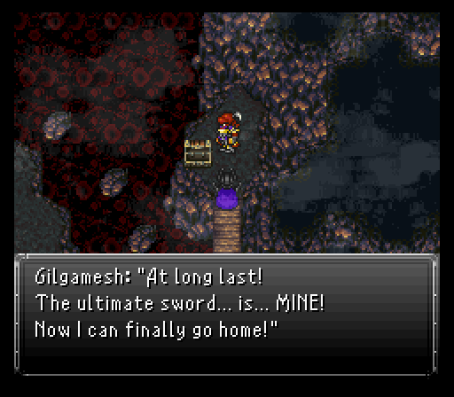
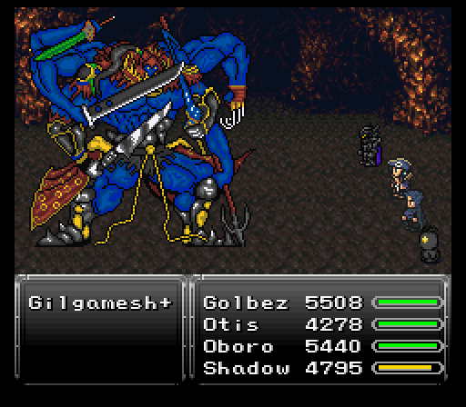
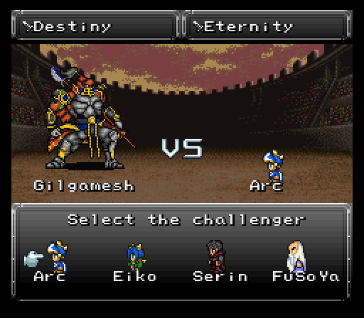
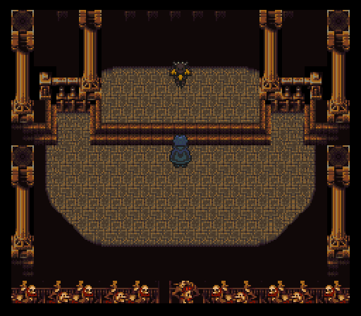
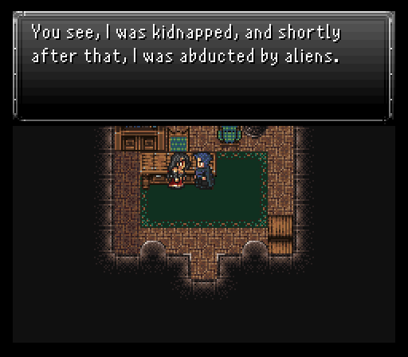
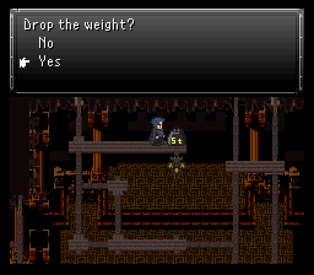
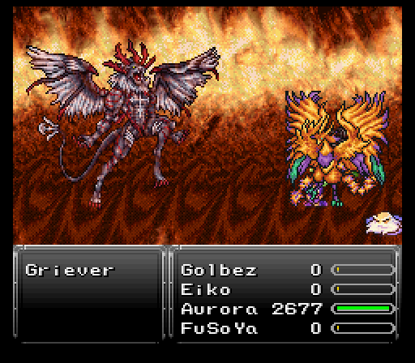
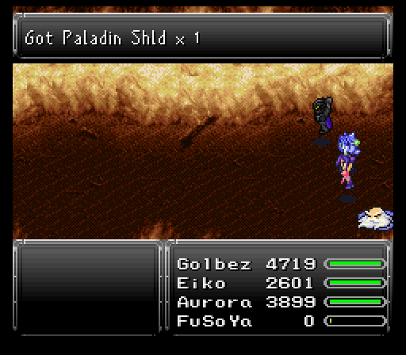

Part 29: Superboss Showdown
Gilgamesh's return:
Dragon's dead, but there's one last so called elephant in the closet to address...a chest we couldn't get to due to a cutscene the first time. My secondary team gets to check it out, but Eiko levels up to 60 first since she learns Curaga to greatly bolster her support capabilities.
While I wish I could get what's in the chest, someone else has other ideas. That someone is none other than our favorite goofball Gilgamesh. Turns out that something is a sword and he calls dibs on it first. Not on our team's watch so cue Gilgamesh's theme...then him pulling a stupid.
That stupid? Well sir, your plans for gaining power should not have come from Megaman X Mavericks Final. The evil energy plan didn't do a lick of good for every single boss that used it to grow huge and it won't be any different for you here.
Gilgamesh's giant form, to be fair, does have a pretty potent special skill in Blade Dance. Doing 2300 or more damage to a frontliner that has close to 210 defense would be no small feat at this point. He can use Quasar, counter numerous skills and spells by throwing various weapons, even if a Quicksilver was used, use Jump at some point, and also has a chance to use Cloud's Limit Break Omnislash. The problem? Evidently he didn't buy in to the multiple lives schtick most other optional bosses utilize. As such, he falls in just a few minutes, but drops a solid weapon in the Eternity. Good attack power and stat boosts, but we can do better.
Now is a good time as any to mention that some bosses, such as this one, have a command in their script to "execute commands even if Quick is in effect". Meaning that they can still fire off their counter attacks even if a character is currently under Quicksilver effect. If you've had that happen to you already and though it was a bug, now you know it is not.
After the timeskip, local boy turned legend Arc decides to scarf down a bunch of Golden Apples before betting said Eternity at the arena. Turns out Gilgamesh is the opponent and, to drive home how dumb his evil energy plan was, he ends up being a huge pain in the ass to deal with here.
Gilgamesh keeps a majority of what he had in the previous fight like Blade Dance and, much more worryingly, Black Shock. Too many of the latter means you may as well restart because your damage is going to tank too heavily to finish him off. You could opt to use a Exodus Token relic to negate it however.
In terms of moves he didn't show last time, he's got Quasar, Meltdown, and Aquatic Breath. Quasar does a good 2500-3000 damage with Meltdown hitting higher (but also damaging Gilga himself in the process) and Aquatic Breath hitting below that. Luckily, a Misty Coat will absorb both Meltdown and Aquatic Breath, providing Arc with the healing he needs to blow through Gilga's two lives. Yes, he gets a second wind after his hp goes poof the first time.
Along with the Misty Coat, I put Arc in the back row and give him the Zodiac Sword, a Daedric Shield, Vitality Cap, and for relics a Wrath Band to not have to deal with idiotic AI choices, and an Exodus Token to prevent Black Shock. This way the only realy thing that can wreck us is Quasar spam and Blade Dance. Hopefully Gilgamesh uses Meltdown and Aquatic Dance to refill Arc's hp before he gets KO'd. Whichever equipment setup you go with, you'll want to make sure Arc has at least 8000 hp. And as if this fight wasn't challenging/luck-based enough, at the very end Gilga uses Ninth Dimension as a final attack before submitting, which will of course destroy Arc or whatever character if their hp is low enough...
After an hour of attempting this fight before this winning run came out, Gilga drops the real prize, Destiny. Better attack power and stat boosts compared to Eternity and also confers 20% evade, something very very few other weapons are capable of. No mp crit property is a bit of a downer, but it's so strong that it's not a huge deal.
Nidhogg:
Just one more loose dragon to deal with now. The rest are in areas I haven't visited yet.
For this dragon, you''ll have to visit the Opera House just a short distance to the west of Sunfall City. In the room with all the switches, the third switch from the left will deposit you onto the front stage with one jerk dragon by the name of Nidhogg waiting to be slain.
Nidhogg is the earth aligned dragon of the squadron as seen by its opener, Quake. This can sting something fierce, doing at least 3500+ damage to anyone without earth resistance. Thankfully, Cloud has the Soul Booster relic, Ronan and Arc have Prism Capes, and Reaper just has a gigantic mass of hp to tank the hit. Nidhogg has a check in its script so that if at any point you apply Float, it does 50 Gs (removes Float) then Magnitude Eight and then Quake. Clever girl. So we'll just have to take the Quakes to the face like a man!
On the physical side of things, Nidhogg's no slouch. Can attack 3-4+ times when a message stating it's enraged appears and has the usual boss mandated named physical strike, Honed Tusk. In terms of Esper Summons, Vysage, Fenrir and Yu Yevon help out a lot, so you may want to bring along characters that can use them.

Not much else to the dragon besides that. Cursed Breath might cause a bit of an issue for a target, but a Remedy will reverse its effects easily. Same for Sand Storm causing blindness. He's weak to wind, which FuSoYa can exploit with Aero for maximum damage.
Not a hard fight for me since everyone's got good gear and can dish out 9999s or close to it. Eiko's the exception to the 9999s, but she keeps the rest of the team healthy with Curaga spam and shelled with Yu Yevon.
Nidhogg has a Dragon Helm up for stealing and drops a Magus Rod upon defeat.
One final note...everyone had Serpent Masks on just to show off that being poisoned with them on translates to a steadily rising hp regen. Not the most effective since bosses are regularly outpacing that healing, but it's still hilarious to see in action.
Before we leave, we check out the dressing room to find none other than Isabelle, the famous actress and singer who plays Maria who went missing last year, and boy does she have one heck of a story to tell.
Now then, I could go into the next dungeon, but there's something to take care of back in Fraust.
Secret: There's actually another way to go about squashing this dragon, quite literally - if you go back up to the rafters, the 5-ton weight from much earlier in the game is still there which you can push off the edge, killing the dragon instantly! The only drawback is you will not receive its item or be able to steal from it.
The sealed guardian:
Back in Fraust this time to wrap up one of the loose ends. Now that we are at least level 50, we can talk to Lord Envoy who will grant us access to the back room where a powerful creature exists. The room that the tonberry was guarding has a monster in a chest, but not just any standard monster. This one is Ultimecia's right hand guardian force Griever.
Griever starts out the fight taking 0 damage from all sources. The only way to break this damage immunity barrier is to drop an Ultima on it, basically requiring that you complete Avalon's sidequest if you want to win this fight at all... Be ready to recast it periodically during the fight whenever a message saying Griever's invulnerable pops up.
That's not the only shield to worry about though. There's one that locks Griever's hp to max at first. Only thing that'll break this is attacking, reviving units, and so on. Once Griever glows twice, this shield is gone for good and you can finally start killing the beast...though this comes with its own baggage which I'll get to later.
You'll want to use your strongest characters, spells, and keep on top of buffs. On the offensive side of things, Griever is adept with both physical and magical attacks as it shifts its elemental affinities around via Barrier Change. You're going to need to bring resistance to as many elements as possible. Hell, nullifying multiple elements is much better since Griever very frequently attacks twice per turn and some of the attacks are powerful like Meltdown, Aero, and so on. Its numerous attack patterns are vast and diverse.
On the physical side of things, there's three moves to watch for. Pulsar Bolt is its stronger physical strike. Can hurt for sure and inflicts blindness, but the Hyper Drive counters that can happen during its holy phase are far more devastating. Seeing Hyper Drive hit for 4500 or more damage is very likely (and as you can probably tell, half of my team can't take a hit of that).
The worst move though is Ultros's old Tentacle move. This does roughly 600-1000 or so damage to all dependent on physical defense and row. Doesn't seem threatening, but sometimes Griever becomes imbalanced. If you see that, Griever's gonna Tentacle the whole team FOUR times in a row. If you're not close to full health without Protect up on the team, you can very easily wipe here.
With that, Griever seems vicious enough, especially if it chains something like Gravity into Whirlwind or Aero. However, once Griever glows twice, the gloves come off as it very frequently swaps its elemental affinities around and can chain together some brutal attacks. Quicksilvers are amazing here as a panic button if the fight suddenly spikes south as it did here because Heartless Angel followed up by Quake ain't pretty at all. Nor is sweating some bullets when the boss attempts to freeze the last person standing. Use your strongest spells and don't be stingy about putting to use any precious items in order to prevail, it doesn't get much harder than this.
You'll also want to make sure you steal from this boss, there's an extremely valuable Celestriad to pick up.
It's a long and difficult fight for sure, but if you persevere to the end, you'll be well rewarded with one of the best shields in the game, the Paladin Shield. It does sport a weakness to poison, but there's really no high end poison nuke to let the element match up with the likes of Nova, Inferno, and Blizzard.
On the plus side though, it absorbs four elements (fire, ice, lightning, and holy), has great defensive stats, boosts might/stamina/speed/magic power by 7, and teaches Ultima at a x1 rate.